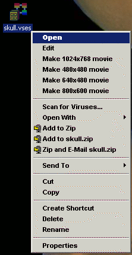

VisIt provides a command line utility based on VisIt's Command Line Interface that is called visit -movie. The visit -movie movie generation utility is installed with all versions of VisIt and can be used to generate movies using session files or Python scripts as input. If you want to design movies based on visualizations that you have created while using VisIt's GUI then you might also want to read about the Save movie wizard. If the visit command is in your path then typing visit -movie at the command prompt, regardless of the platform that you are using, will launch the visit -movie utility. The following table lists visit -movie's command line arguments:
| Argument | Description |
| -format fmt | The format option allows you to set the output format for your movie. The supported values for fmt are: mpeg : MPEG 2 movie.qt : Quicktime movie.sm : Streaming movie format.png : Save raw movie frames as individual PNG files.ppm : Save raw movie frames as individual PPM files.tiff : Save raw movie frames as individual TIFF files.jpeg : Save raw movie frames as individual JPEG files.bmp : Save raw movie frames as individual BMP (Windows Bitmap) files.rgb : Save raw movie frames as individual RGB (SGI format) files. |
| -geometry size | The geometry option allows you to set the movie resolution. The size argument is of the form WxH where W is the width of the image and H is the height of the image. For example, if you want an image that is 1024 pixels wide and 768 pixels tall, you would provide: -geometry 1024x768. |
| -sessionfile name | The sessionfile option lets you pick the name of the VisIt session to use as input for your movie. The VisIt session is a file that describes the movie that you want to make and it is created when you save your session from within VisIt's GUI after you set up your plots how you want them. |
| -scriptfile name | The scriptfile option lets you pick the name of a VisIt Python script to use as input for your movie. |
| -framestep name | The number of frames to advance when going to the next frame. |
| The frame at which to start. | |
| -end frame | The frame at which to end. |
| -output | The output option lets you set the name of your movie. |
| -fps number | Sets the frames per second at which the movie should be played. |
The visit -movie utility always supports creation of series of image files but it does not always support creation of movie formats such as QuickTime, or Streaming movie. Support for movie formats varies based on the platform. QuickTime and Streaming movie formats are currently limited to computers running IRIX and the appropriate movie conversion tools (makemovie, img2sm) must be in your path or VisIt will create a series of image files instead of a single movie file. You can always use visit -movie to generate the individual movie frames and then use your favorite movie generation software to convert the frames into a single movie file.
|  |
| Figure 9 |
If you browse the Windows file system and come across a VisIt session file, which on Windows ends with a .vses extension, you can right click on the file and choose from several movie generation options. The movie generation options make one-click movie generation possible so you don't have to master the arguments for visit -movie like you do on other platforms. After selecting a movie generation option for a VisIt session file, Windows runs visit -movie implicitly with the right arguments and saves out the movie frames to the same directory that contains the session file. The movie generations option in a session file's context menu are shown in figure.